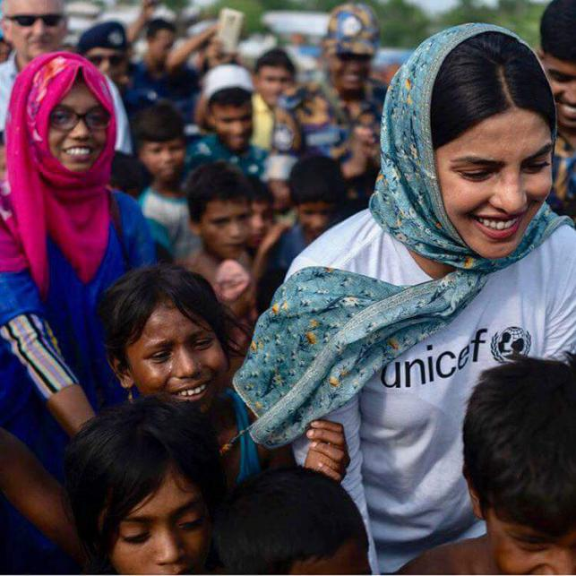
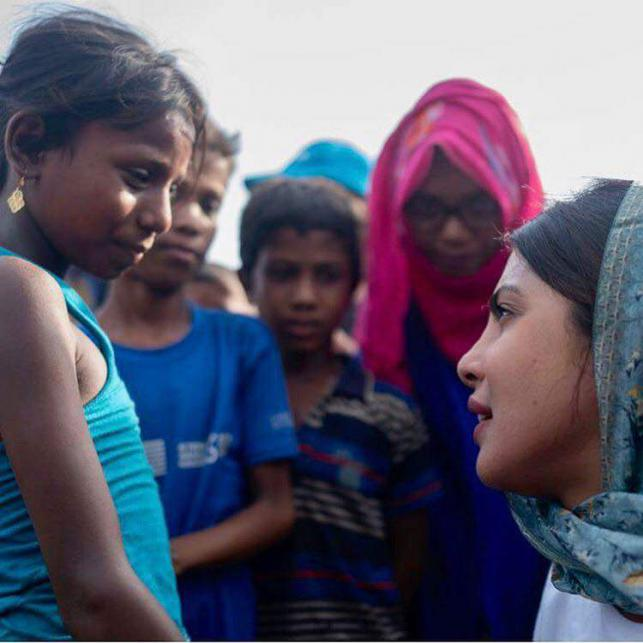
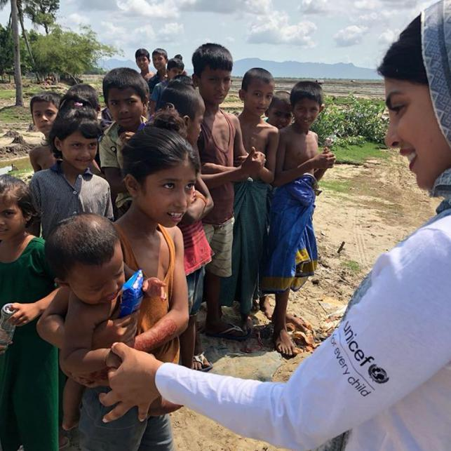
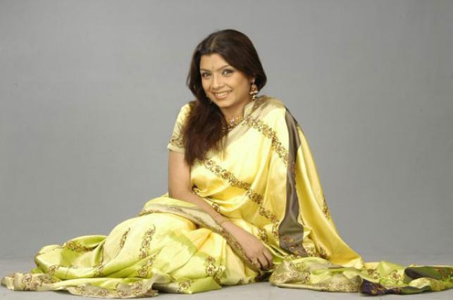
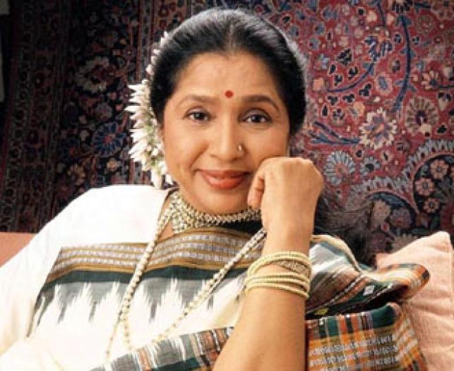

Breaking News


Priyanka laments Rohingya children’s woes
Prothom Alo English Desk | Update: 20:34, May 22, 2018
0Like

UNICEF goodwill ambassador and Bollywood actress Priyanka Chopra is appalled at what she called bleak future of the Rohingya children, reports UNB. She strongly feels that Rohingya children can have a chance at a future with help from all. "For a lot of the Rohingya children, this ordeal will leave them scarred, physically and emotionally, for the rest of their lives. With your help, maybe these children can have a chance at a future," she said on Tuesday. "We need to care. Please lend your support," Priyanka said making a call for supporting the Rohingya children. Priyanka Chopra is now in Bangladesh on a four-day visit. "Across the river is Myanmar. It's empty now, but a few months ago this area, known as ‘Sabrang’, was filled with hundreds of thousands of Rohingya refugees fleeing Myanmar," she wrote on her verified Facebook page. Their trip here, she said, was filled with many hardships and tremendous danger and many of them made their journey on foot, walking for days through the hills, then floating across the Naf river or the Bay of Bengal on make shift boats. "Many of them injured, pregnant, elderly, etc. Their ordeal didn't end here...after entering Bangladesh, they would often have to wait for days, sleeping in the open fields with no food or water, for aid workers to reach them," she wrote. Priyanka visited a number of Rohingya camps in Teknaf upazila in Cox’s Bazar. She first visited the camp set up at Hariyakhali Anchor point under Sabrang union of Teknaf upazila. Hariyakhali is known as the entrance point from which these refugees entered Bangladesh from Myanmar. Priyanka, from Hariyakhali, went to Ledha camp, where she visited a child development centre established by UNICEF. She also visited the camp in Unchiprang area, where around 30,000 Rohingya people are currently staying. "These children are at the forefront of this humanitarian crisis, and they desperately need our help," she said while visiting Rohingya camp in Cox's Bazar district.   Hours after her arrival in Dhaka on 21 May, she left for Cox's Bazar by a private airlines flight. She said the world saw horrific images of ethnic cleansing from the Rakhine State of Myanmar. This drove nearly 700,000 Rohingyas across the border into Bangladesh - 60 percent of them children. "Many months later, they are still vulnerable, living in crowded camps with no idea when or where they will ever belong to...even worse, when they will get their next meal," she wrote on her Facebook page. And, she added, as they finally start settling and feeling a sense of safety, monsoon looms, threatening to destroy all that they have built so far. "This is an entire generation of children that have no future in sight. Through their smiles I could see the vacancy in their eyes," Priyanka wrote. After spending two days in Cox's Bazar, Priyanka, who was named a global UNICEF goodwill ambassador, after serving as a national goodwill ambassador to India for 10 years, is scheduled to return to Dhaka on Thursday and leave Dhaka in the evening on the same day.
Actress Tazin passes away
Entertainment Correspondent | Update: 18:31, May 22, 2018
0Like

Popular actress Tazin Ahmed is no more. She died of a cardiac arrest on Tuesday afternoon, confirmed filmmaker Shokal Ahmed and actor Rownak Hassan. Tazin was rushed to Regent Hospital in the capital around 10:00am on Tuesday but was declared dead by physicians in the afternoon, they added. ''Hearing that Tazin was admitted, we rushed to the hospital. But, physicians declared her dead a few minutes later," said Rownak. Besides being an actress both for the small screen and the stage, Tazin used to anchor some popular TV shows and was also involved with journalism.
Asha Bhosle to be honoured by West Bengal
IANS . Kolkata | Update: 20:53, May 19, 2018
0Like

Veteran Indian singer Asha Bhosle will be honoured by the West Bengal government on 21 May. Asha on Saturday thanked the state government and said that she will receive the award in person. "My sincere thanks to the West Bengal Government for bestowing their highest civilian award on me. I shall receive the same in person in Kolkata on 21 May," Asha Bhosle tweeted. Asha Bhosle has been part of the Hindi film industry for over six decades and has sung numbers like "Zara sa jhoom loon main", "Uden jab jab zulfen teri" and "In aankhon ki masti".


© All Rights Reserved
Prothom Alo 1998 - 2018
Editor & publisher: Matiur Rahman.
CA Bhaban, 100 Kazi Nazrul Islam avenue, Karwan Bazar, Dhaka 1215
Phone: 8180078-81, Fax: 9130496, E-mail: info@prothom-alo.info
Reproduction of any content,
news or article published on this website is
strictly prohibited.Privacy